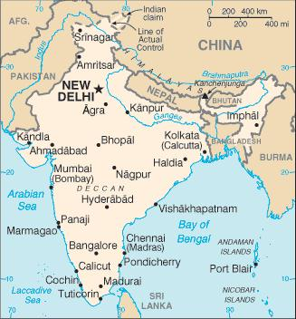
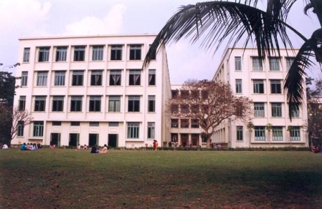
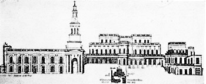

The Call To India

Loreto in India owes its origin to a visit by Dr Bakhaus to Loreto Abbey, Rathfarnham,
Ireland, in 1840 to request Mother Teresa Ball to send sisters to set up a school
for Catholic children in Calcutta. In response to this, Mother Teresa Ball sent
7 Loreto Sisters and 5 Postulants, all in their twenties, under the leadership of
Delphine Hart to India, announcing that they would probably never see their homeland
again. These pioneers were Mother Delphine Hart, Mother Teresa Mons, Mother Martina
McCann, Sisters Alexia Egan, Benigna Egan, Veronica Fox, Gabriel Doyle, Miss Isabella
Hart (M.Delphine’s sister), a Miss McDonough who received the habit as Sister Xaveria
on her deathbed at the end of this first year and two other postulants, Miss Shanley
and Miss Fitzpatrick. They sailed on a ship named The Scotia. This intrepid band
left Dublin on September 1, 1841 from Ireland and landed at Babughat, Kolkata on
December 29, 1841. They were the first congregation to come to North India.
There was a formal welcome and religious ceremony at the Cathedral on Portuguese
Church Street. A great civic reception was held the next day, where they were welcomed
by the Ladies of the Nun Committee, a large gathering of the people of Calcutta
and Bishop Carew, and they were installed at the house in Middleton Row.
Earlier occupants of the building included Henry Vansittart, Governor of Bengal
(1760-64) Sir Elijah Impey, First Chief Justice of the Supreme Court at Calcutta
(1774-82) and from 1824, the Second Anglican Bishop of Calcutta, Bishop Heber. On
January 10, 1842, Loreto House School was opened in this building. Meanwhile, the
construction of St. Thomas’ Church, on the same premises had begun from November
11, 1841. The Catholic Archbishop of Calcutta, Mgr. Carew, also constructed a residence
for himself next to the church and at the doorstep of Loreto House. This building
was then known as St. Thomas’ House. The only original buildings on the premises
now are St. Thomas’ Church and a part of the building where the college was first
established. The Provincial of the Loreto institute in India now resides within
the walls that first housed Loreto College.
On 10th January 1842 the Sisters began the school at Loreto House with 60 pupils
as well as taking classes in the orphanage at the Murgihatta Cathedral in keeping
with Mary Ward’s dictum to "love the Poor".
In 1843 Loreto Day School Bowbazar, was founded.
An orphanage was opened in Serampore and another boarding school was founded in
Chandannagar.
In 1847, orphans and boarders from Murgihatta, Serampore and Chandannagar were shifted
to the beautiful grounds of Loreto Convent, Entally.
In 1857,Loreto Day School, Sealdah was formally inaugurated.
In 1879, Loreto Day School Dharamtalla, founded earlier by laymen, was handed over
to the Loreto Sisters.
In the early years, Loreto nuns travelled to Dacca, Chittagong, Vellore, Ootacamund,
Saugor, Hazaribagh and Purnea, establishing institutions, many of which were left
for others to nurture.
Elsewhere, Loreto developed strong and lasting foundations: Loreto Convent, Darjeeling
[1847], Loreto Convent, Lucknow [1872], Loreto Convent, Asansol [1877], Tara Hall,
Simla [1899], St Agnes’ Loreto Day School, Lucknow, [1904]
and Loreto Convent, Shillong [1909].

In the early years of the twentieth century, Loreto ventured into higher education
for women. In 1912, Loreto College, Calcutta was founded.
Affiliation to the university was granted, first in 1912-1913, for Intermediate
Arts and later for BA (Bachelor of Arts), ISC (Intermediate Science) and BT (Teacher
Training).
The Secondary School Teachers’ Training College was opened in February 1913. The
courses first offered were for the Licentiate of Teaching and Bachelor of Teaching.
Today it offers a Two year post graduate B. Ed. (Bachelor of Education) degree.
It is affiliated to Calcutta University and in 1998 it was recognized by the National
Council for Teacher Education, a body set up under the NCTE Act 1993.
In 1926 St Teresa’s Girls’ Higher Secondary School was opened for Nepali girls.
In 1942: Pushpa Vidyalaya, the first Loreto Hindi medium school, was started for
poor children in the compound of St Agnes’ Loreto Day School, Lucknow.
1943: Loreto Convent, Doranda, Ranchi was established. In 1965, Loreto found a home
in Delhi cantonment
1950s: Vocational Training center, Loreto House was started.
The Commercial College was first begun in Loreto Dharamtala and shifted to Loreto
House in the 1950s.
1954 : Loreto Day School, Elliot Road, Calcutta
1955: The TTC (Trained Teachers’ Certificate), the Primary School Teachers’ Training
Department of Loreto House was started to provide a course which is certified by
the West Bengal School Education Department. It’s also recognized by the National
Council for Teachers’ Education (NCTE).
1961: The Government offered the Loreto Sisters a large house, Southfield, on the
slopes of Observatory Hill to begin a women’s college as there was no college for
women in the whole Darjeeling District at that time.
By the 1970s, new directions were evident in Loreto Education. In 1971, Loreto St
Vincent’s school was founded in Thakurpukur as a Bengali medium primary school for
the poor children of the area. In 1979, Jeevan Rekha, Loreto Delhi, established
a coaching programme for village children.

In 1985, the Rainbow school was established in Loreto Sealdah. Other innovative
projects devised at Loreto Sealdah include a village programme wherein every week
some children visit and teach in village schools, the Shikhalaya project initiated
with government assistance to get every child in Kolkata into school, and the "barefoot
Teacher Training" to impart basic training to teachers of village schools.
Several literacy programmes were started, including Ankur Vidyalaya - Literacy Programme,
Loreto Asansol (1991), Jagriti Literacy and Tailoring center - Lucknow (1994) and
Asha Kiran, Ranchi- a literacy and tailoring project, while vocational courses were
offered at Akansha Dam, Loreto Day School, Dharamtala and the Vocational training
center, Entally.
Outreach programmes include Lolay Primary School (1991), Archana School and Outreach
programme of Loreto House school, Kolkata (1992), Sunshine School, Entally - a pre-school
foundation class (1992), Loreto Sanjeevan Shiksha Sadan, Panighatta taken over from
the Jesuits (1995), Roshni School, the outreach programme of Loreto Elliot Road
(1996), while Asha Deep is the non-formal outreach programme of Loreto Bowbazar
(1996). In 1997, Sadam was opened, fulfilling a long time wish of the Late Bishop
Benjamin for the Loreto Education Development Center. Dharan has engaged three teachers
to take coaching classes for students from Government schools and also runs a hostel
(1996). At Loreto Outreach Center, Laitkor, classes are conducted daily in rented
rooms in two villages for children attending local schools.
Sr. Euphemia started pastoral work in Umphyrnai in 1994 and School and Tribal Health
Care Dispensary was also set up later..
To answer the call of Courage to Move, three of our sisters from Kolkata were missioned
to Padrishibpur in Bangladesh in 2005. They took over the running of St.Alfred’s
School, which up to then was managed by lay people after the Holy Spirit Fathers
left.
In 2007 the Darjeeling Region was begun with Darjeeling, Lolay, Sadam, Dharan and
Panighatta coming under its umbrella. The Regional House in Champasari and the Mary
Ward Development Centre were established in Siliguri.
A house for students was opened in Tiruchirapalli in 2006.
The new Novitiate house was constructed in 2007 in Thakurpukur – Abhilasha.
In 2007 social and pastoral work was begun in Satarda by Sr. Euphemia.